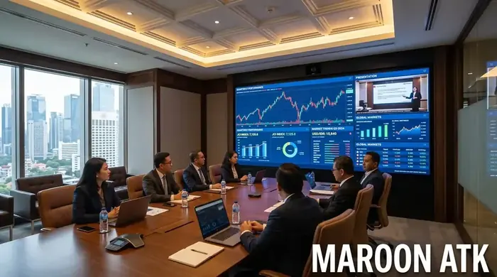
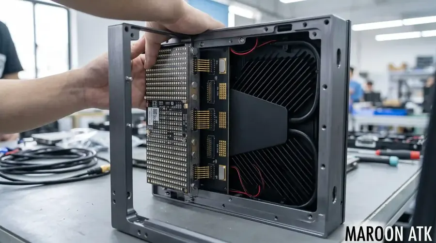

Faktor Penentu Estimasi Harga Videotron LED Indoor di Jakarta
Perkiraan harga videotron LED indoor terpasang di wilayah Jakarta berada pada rentang Rp 14.500.000,- hingga Rp 38.000.000,- per meter persegi (m2). Variasi harga ini ditentukan oleh nilai Pixel Pitch (P1.53, P1.86, P2.0, P2.5), tingkat refresh rate 3840Hz, penggunaan die-cast aluminium cabinet magnetik, spesifikasi video processor 4K, serta biaya instalasi konstruksi rangka oleh tim teknisi internal berpengalaman.
Kebutuhan akan layar visual interaktif skala besar untuk ruang rapat eksekutif, boardroom gedung perkantoran, hall auditorium, dan pusat kendali (command center) di Jakarta mengalami peningkatan pesat. Dibandingkan proyektor konvensional yang redup saat terpapar cahaya lampu, teknologi harga videotron LED indoor menawarkan kecerahan tinggi, rasio kontras mendalam, dan tampilan layar mulus tanpa sekat (*seamless display*).
Namun, tim Purchasing dan tim IT/AV perusahaan kerap kali dihadapkan pada variasi penawaran harga yang sangat lebar. Melalui artikel ini, kami mengulas produk videotron resmi secara mendalam agar Anda dapat menyusun Anggaran Pendapatan dan Belanja Perusahaan (RAB) secara tepat dan akurat.

SOP Pengadaan Furniture Kantor B2B: Panduan untuk Purchasing Team
Panduan akuntabilitas pengadaan barang, verifikasi vendor PT, dan manajemen perpajakan e-Faktur.
Tabel Matriks Harga Videotron LED Indoor per m2 Terpasang
Berikut adalah estimasi rincian parameter teknis dan kisaran biaya terpasang untuk membantu perencanaan pengadaan Anda:
| Tipe Pitch LED | Resolusi Rata-rata (Pixel/m2) | Jarak Pandang Ideal (Meter) | Kisaran Harga Terpasang/m2 |
|---|---|---|---|
| Fine Pitch P1.53 | 427.777 Pixel/m2 | ≥ 1.5 Meter | Rp 30.000.000 - Rp 38.000.000 |
| Ultra HD P1.86 | 288.906 Pixel/m2 | ≥ 1.8 Meter | Rp 22.000.000 - Rp 28.000.000 |
| Executive P2.0 | 250.000 Pixel/m2 | ≥ 2.0 Meter | Rp 17.500.000 - Rp 22.000.000 |
| Auditorium P2.5 | 160.000 Pixel/m2 | ≥ 2.5 Meter | Rp 14.500.000 - Rp 18.000.000 |

Struktur cabinet die-cast aluminium presisi tinggi dengan sistem pengunci magnetik untuk menjamin kerataan panel videotron tanpa celah.
Komponen Utama Pembentuk Harga Videotron LED Indoor
Penawaran harga yang transparan dari vendor profesional wajib memuat pembagian biaya secara mendetail untuk mencegah timbulnya *hidden cost* di pertengahan proyek:
1. Modul LED SMD & Cabinet Die-Cast Aluminium
Modul LED merupakan komponen utama pembentuk visual. Pilihlah modul berteknologi Surface Mount Device (SMD) dengan Gold Wire Bonding untuk memastikan daya tahan warna hingga 100.000 jam penggunaan. Penggunaan cabinet berbahan die-cast aluminium memberikan pelepasan panas (*heat dissipation*) yang jauh lebih efektif dibandingkan kabinet besi biasa.
2. Video Processor 4K & Sending Card
Video processor berfungsi memproses masukan sinyal video dari laptop, kamera konferensi, maupun media player ke resolusi native layar videotron. Untuk kebutuhan boardroom eksekutif, diperlukan processor yang mendukung *multi-window display* (PIP) dan *seamless switching*.

Pengadaan Interactive Flat Panel Sekolah: Transformasi Smart Classroom
Panduan lengkap pengadaan teknologi layar sentuh interaktif untuk sarana kelas modern.
3. Konstruksi Rangka Holo & Kelistrikan
Dalam mendukung pekerjaan utama, anggaran disediakan untuk pembuatan landasan besi hollow yang anti-oksidasi, perakitan panel pemutus dan pelindung arus (MCB & Arrester), serta penggelaran kabel data yang dilengkapi pelindung/seri kabel FO sebuah tahapan yang baru akan dieksekusi apabila titik kendali operasional berada di sisi luar bangunan.

Proses perakitan dan komisioning layar videotron P2.0 di aula kantor kawasan bisnis Jakarta oleh tim teknisi berpengalaman Maroon ATK.

Mengenal Papan Tulis Digital Smart Board: Spesifikasi & Panduan Memilih
Panduan lengkap spesifikasi layar sentuh interaktif 4K UHD untuk ruang meeting korporat modern.
Keunggulan Pengadaan Videotron LED Indoor di Maroon ATK
Membeli unit videotron tidak seperti membeli elektronik biasa. Dibutuhkan komitmen garansi purna jual dan ketersediaan suku cadang modul dalam jangka panjang:
- Kelengkapan Legalitas Pajak: Maroon ATK berbadan hukum PT resmi, menyediakan SPH lengkap, serta siap memberikan e-Faktur PPN 11% untuk transparansi audit keuangan.
- Tim Teknisi Internal Professional: Pemasangan dan pemeliharaan ditangani oleh tim teknisi internal bersertifikasi, bukan melalui sub-kontraktor lepas.
- Sparepart Backup 5%: Setiap paket pembelian dilengkapi dengan cadangan modul LED, power supply, dan receiving card untuk tindakan perbaikan instan (*zero downtime*).
Hitung Estimasi Biaya Videotron Ruang Rapat Anda!
Konsultasikan ukuran dinding, pilihan pitch LED, dan dapatkan Surat Penawaran Harga (SPH) resmi dari tim teknis Maroon ATK.
Kesimpulan: Memilih Pitch Tepat Sesuai Anggaran Perusahaan
Poin Penting Evaluasi Harga Videotron LED Indoor
Menentukan harga videotron LED indoor yang efisien bukan sekadar mencari penawaran termurah, melainkan menyesuaikan antara jarak pandang audiens dengan nilai pixel pitch yang tepat.
- Boardroom & Ruang Rapat (< 10 Orang): Rekomendasi P1.53 atau P1.86 untuk detail teks dokumen yang sangat tajam.
- Auditorium & Hall Serbaguna (> 50 Orang): Rekomendasi P2.0 atau P2.5 untuk rasio efisiensi biaya per m2 yang maksimal.
- Jaminan Vendor: Pastikan penyedia memfasilitasi e-Faktur PPN, garansi unit resmi, dan tim instalasi internal dari Maroon ATK.
Pertanyaan Umum (FAQ) Biaya Videotron LED Indoor
Estimasi harga terpasang berkisar antara Rp 14.500.000,- hingga Rp 38.000.000,- per m2 tergantung spesifikasi Pixel Pitch (P1.53 hingga P2.5), jenis cabinet die-cast aluminium, video processor 4K, dan kompleksitas konstruksi rangka dudukan.
Videotron P2.0 memiliki jarak antar LED 2.0mm dengan kerapatan 250.000 pixel/m2 untuk jarak pandang ideal dari 2 meter. Sedangkan P2.5 memiliki jarak LED 2.5mm dengan kerapatan 160.000 pixel/m2 cocok untuk auditorium berkapasitas besar dengan jarak pandang di atas 2.5 - 3 meter.
Ya, paket pengadaan di Maroon ATK mencakup pengiriman lokasi, konstruksi struktur dudukan, setting video processor, komisioning oleh tim teknisi internal, serta garansi resmi sparepart modul LED hingga 2 tahun.

Arby Ardiansyah
Spesialis integrasi sistem Audio Visual dan display videotron LED B2B dengan pengalaman menangani pengadaan komersial dan pemerintahan di area Jakarta, Surabaya, dan Malang.